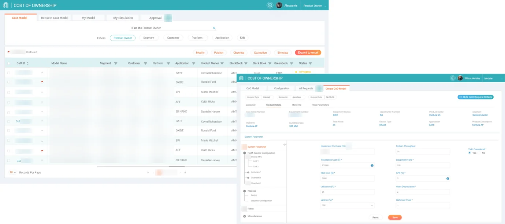

The whole process was manual
Building one cost model took about 8 weeks. It used 10 SharePoint sites and 5 Excel macro files, with no enterprise standard. Most users could not build a model on their own.
Cost of ownership · Enterprise data tool

Context
Cost of ownership shows what a tool really costs a customer to run. It is a standard model the company uses to give customers a clear picture of their cost per wafer.
The problem
Building one cost model took about 8 weeks. It used 10 SharePoint sites and 5 Excel macro files, with no enterprise standard. Most users could not build a model on their own.
I did a contextual enquiry inside the fab and watched people fill the macro files. They entered data by hand, the macros sometimes failed halfway, and the work went to and fro between people. They wanted to reuse an old model with small edits, and see the output in a clear format.
So I redefined the problem: how can users create, validate and publish a model in one flexible tool, and reuse it later?
My process
We followed jobs-to-be-done and worked in dual-track agile with the product team.
Field research, interviews and observation
Personas, journey and job mapping
Use cases, user flows and sketches
Four layouts, then testing with real users
The decisions
Experts needed control, but new users were lost. I did not want one form for each old spreadsheet. So I designed one workflow: set a baseline, validate data, run a simulation and compare results.
Users can reuse an existing model with small edits, instead of starting again.
Users wanted to see what drives the cost, and share it. So the simulation shows clear results and what-if scenarios.

We had many forms and tables, with no clear navigation. I tried four layouts, then tested the final one with real users in the fab.
The outcome and impact
| Daily work | Before | After |
|---|---|---|
| Where the work happens | 10 SharePoint sites and 5 macro files | One web tool |
| Building a model | Manual, about 8 weeks | Guided workflow, with reuse |
| What-if questions | Hard to try | Built into the tool |
What I learned
Watching people showed the real pain.
I only understood the macro problems when I watched people use them.